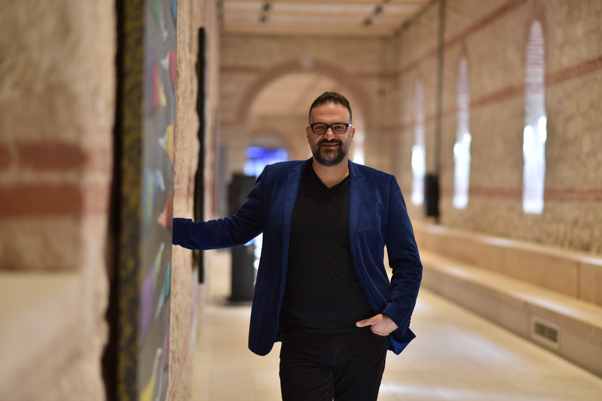
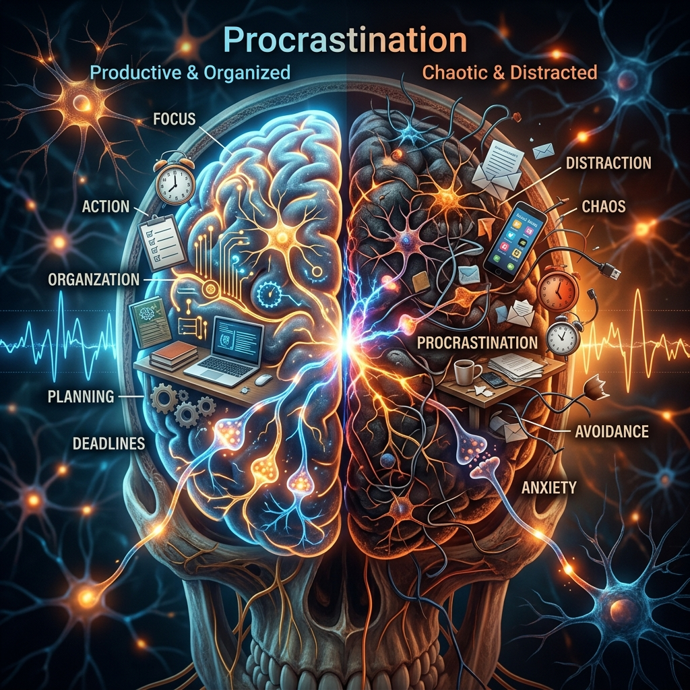

"Bir şeyi gerçekten bilmek, onu anlatmakla olur."
Tarih, felsefe, bilim ve insan doğasına dair derinlemesine içerikler, analizler ve hikayeler.

Akademisyen, yazar, kurumsal iletişim ve teknoloji uzmanıyım. Yıldız Teknik Üniversitesi ve İstanbul Şehir Üniversitesi gibi saygın kurumlarda gerçekleştirdiğim akademik çalışmaların yanı sıra, 2012 yılından beri dijital mecralarda bilim, kültür, felsefe ve sanat temalarında derinlemesine içerikler üretiyorum.
Yediveren Yayınları · Soru sorma sanatının beyin üzerindeki etkilerini ve değişim yaratma gücünü ele alan popüler eseri.
Tarihten felsefeye, bilimden kişisel gelişime kadar en çok izlenen ve beğenilen içerikler.
Antik dünyanın yedi harikasından biri olan Asma Bahçeleri'nin arkasındaki gizemli hikaye ve arkeolojik bulgular.
Alan Watts'ın paradoksal felsefesi ve modern psikolojinin bu kurala bakışı.
852 kişinin hayatını kaybettiği trajedi ve hâlâ yanıtlanmamış sorular.
Dijital ikizler, deepfake teknolojisi ve geleceğin iletişim biçimleri.
Spinoza, Descartes, Kant ve diğer büyük filozofların inanç ve tanrı kavramına yaklaşımları.

PsikolojiBeynimiz neden başlamak yerine ertelemeyi seçer? Bilimsel araştırmalar ne diyor?
Videolara sığmayan detaylı araştırmalar, düşünceler ve derinlemesine analizler.
Bugün herkes ticaret yapıyor, ortak hedef kazanmak. Ancak çağımızın en kritik meselesi sadece ekonomi değil; gençlik ve doğru istihdam modelleri yaratmaktır.
Günümüz dünyasında sorgulama kültürünün zayıflaması, tüketim alışkanlıkları ve toplumsal değerlerin dönüşümü üzerine eleştirel bir bakış.
Demokrasi sadece sandıktan çıkan iradeyle ölçülemez. Gerçek demokrasi, herkesin kendini eşit şekilde ifade edebildiği bir düzenle mümkündür.